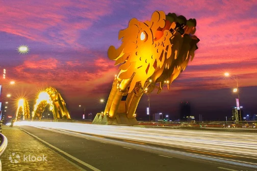
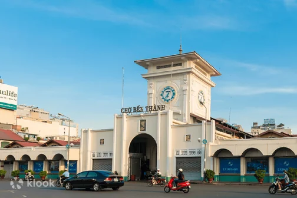

Giới thiệu về Đà Nẵng
Vài nét về Đà Nẵng
Đà Nẵng là thành phố của những cây cầu và được mệnh danh là thành phố đáng sống nhất Việt Nam. Nổi
tiếng với hình ảnh Cầu Rồng vừa mạnh mẽ vừa uy nghiêm, thành phố phố Đà Nẵng được thiên nhiên ưu ái
ban tặng những bãi biển trong xanh cùng hàng loạt hòn đảo ấn tượng. Du lịch Đà Nẵng đang ngày một
phát triển, thu hút đông đảo du khách trong nước lẫn quốc tế.
Bãi biển Mỹ Khê bao la bên cạnh Ngũ Hành Sơn hùng vĩ cùng “viên ngọc quý” Bán Đảo Sơn Trà - tất cả những danh lam thắng cảnh này đều góp phần mang đến trải nghiệm chân thực cho du khách ghé thăm.
Có dịp đi du lịch Đà Nẵng tự túc, bạn đừng bỏ lỡ cơ hội khám phá khu du lịch Bà Nà Hills nổi tiếng với Cầu Vàng và khung cảnh Châu Âu thu nhỏ của Làng Pháp. Ngoài ra, #teamVietnam Travel có thể đi tàu ra Cù Lao Chàm để ngắm san hô, hít hà hương biển trong lành giữa thiên nhiên hoang sơ, chỉ cách biển Cửa Đại 16km. Trong khi đó, Thánh Địa Mỹ Sơn lại là một điểm đến đầy hứa hẹn cho những ai yêu thích lịch sử và đam mê khám phá văn hoá Chăm Pa. Và còn rất nhiều di tích lịch sử khác như Bảo Tàng Chăm Pa, Chùa Linh Ứng hay Đỉnh Bàn Cờ danh tiếng.
Có rất nhiều điều để trải nghiệm và khám phá ở thành phố Đà Nẵng. Bạn đừng quên dành một ngày thư giãn ở Suối Khoáng Nóng Thần Tài để nghỉ ngơi trước khi kết thúc chuyến du lịch. Nếu được, hãy lên kế hoạch tham quan thành phố này vào dịp festival pháo hoa hàng năm và trải nghiệm một trong những sự kiện quốc tế thú vị nhất năm. Ghé thăm Phố Cổ Hội An, bảo tàng úp ngược Upside Down World để chụp những bức ảnh tuyệt đẹp cùng bạn bè, thẳng tiến chợ đêm thưởng thức đặc sản Đà Nẵng và chiêm ngưỡng vẻ đẹp về đêm của thành phố đều là những ý tưởng không tồi đâu đấy.
Từ tham quan đến mua sắm, nghỉ dưỡng hay thử thách với các trò chơi trên biển, Đà Nẵng là địa điểm gói gọn mọi trải nghiệm hàng đầu mà bạn không nên bỏ lỡ. Dù vi vu một mình, cùng người yêu, theo nhóm bạn hoặc gia đình đông đúc, #teamVietnamTravel đều có thể khám phá khía cạnh bất ngờ thú vị về thành phố biển đáng yêu này.
Vietnam Travel mang đến đa dạng dịch vụ hấp dẫn để bạn thoải mái khám phá Đà Nẵng như xe đưa đón riêng, vé tham quan, tour du lịch, voucher ăn uống và ưu đãi khách sạn với quy trình đặt hàng vô cùng tiện lợi. Cùng Vietnam Travel du lịch Đà Nẵng ngay để tận hưởng những ưu đãi độc quyền và chuẩn bị cho một chuyến đi tràn đầy niềm vui. Nếu bạn chưa biết chơi gì ở Đà Nẵng, Vietnam Travel sẽ giúp bạn với rất nhiều thông tin và bí kíp du lịch Đà Nẵng hữu ích nữa đấy.
Bãi biển Mỹ Khê bao la bên cạnh Ngũ Hành Sơn hùng vĩ cùng “viên ngọc quý” Bán Đảo Sơn Trà - tất cả những danh lam thắng cảnh này đều góp phần mang đến trải nghiệm chân thực cho du khách ghé thăm.
Có dịp đi du lịch Đà Nẵng tự túc, bạn đừng bỏ lỡ cơ hội khám phá khu du lịch Bà Nà Hills nổi tiếng với Cầu Vàng và khung cảnh Châu Âu thu nhỏ của Làng Pháp. Ngoài ra, #teamVietnam Travel có thể đi tàu ra Cù Lao Chàm để ngắm san hô, hít hà hương biển trong lành giữa thiên nhiên hoang sơ, chỉ cách biển Cửa Đại 16km. Trong khi đó, Thánh Địa Mỹ Sơn lại là một điểm đến đầy hứa hẹn cho những ai yêu thích lịch sử và đam mê khám phá văn hoá Chăm Pa. Và còn rất nhiều di tích lịch sử khác như Bảo Tàng Chăm Pa, Chùa Linh Ứng hay Đỉnh Bàn Cờ danh tiếng.
Có rất nhiều điều để trải nghiệm và khám phá ở thành phố Đà Nẵng. Bạn đừng quên dành một ngày thư giãn ở Suối Khoáng Nóng Thần Tài để nghỉ ngơi trước khi kết thúc chuyến du lịch. Nếu được, hãy lên kế hoạch tham quan thành phố này vào dịp festival pháo hoa hàng năm và trải nghiệm một trong những sự kiện quốc tế thú vị nhất năm. Ghé thăm Phố Cổ Hội An, bảo tàng úp ngược Upside Down World để chụp những bức ảnh tuyệt đẹp cùng bạn bè, thẳng tiến chợ đêm thưởng thức đặc sản Đà Nẵng và chiêm ngưỡng vẻ đẹp về đêm của thành phố đều là những ý tưởng không tồi đâu đấy.
Từ tham quan đến mua sắm, nghỉ dưỡng hay thử thách với các trò chơi trên biển, Đà Nẵng là địa điểm gói gọn mọi trải nghiệm hàng đầu mà bạn không nên bỏ lỡ. Dù vi vu một mình, cùng người yêu, theo nhóm bạn hoặc gia đình đông đúc, #teamVietnamTravel đều có thể khám phá khía cạnh bất ngờ thú vị về thành phố biển đáng yêu này.
Vietnam Travel mang đến đa dạng dịch vụ hấp dẫn để bạn thoải mái khám phá Đà Nẵng như xe đưa đón riêng, vé tham quan, tour du lịch, voucher ăn uống và ưu đãi khách sạn với quy trình đặt hàng vô cùng tiện lợi. Cùng Vietnam Travel du lịch Đà Nẵng ngay để tận hưởng những ưu đãi độc quyền và chuẩn bị cho một chuyến đi tràn đầy niềm vui. Nếu bạn chưa biết chơi gì ở Đà Nẵng, Vietnam Travel sẽ giúp bạn với rất nhiều thông tin và bí kíp du lịch Đà Nẵng hữu ích nữa đấy.